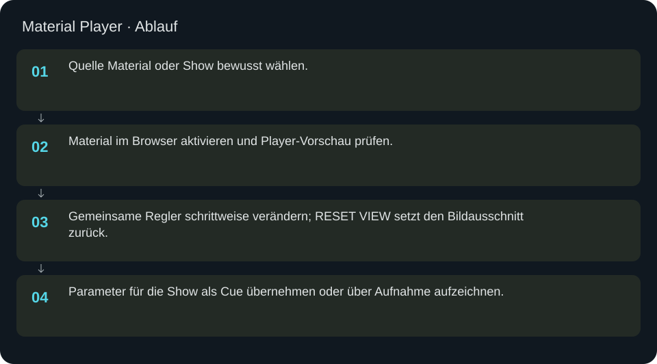
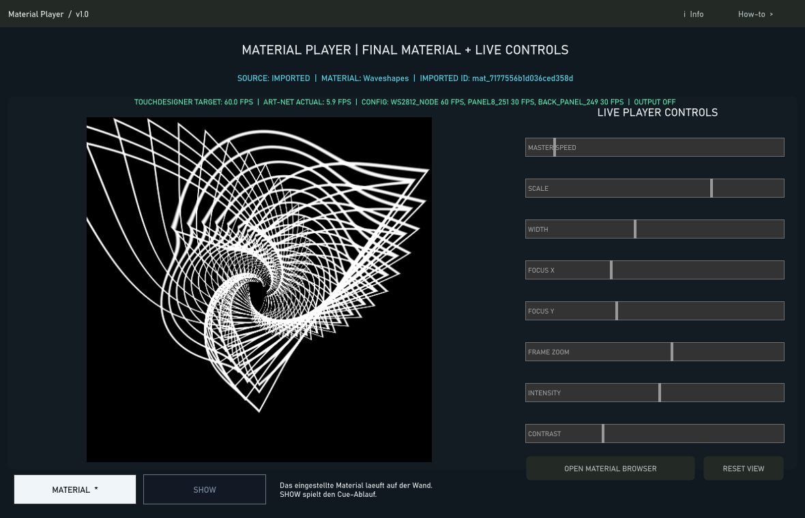

Material Player
Aktive Quelle und Materialbild mit gemeinsamen Reglern kontrollieren.
In welcher Reihenfolge?
- Quelle Material oder Show bewusst wählen.
- Material im Browser aktivieren und Player-Vorschau prüfen.
- Gemeinsame Regler schrittweise verändern; RESET VIEW setzt den Bildausschnitt zurück.
- Parameter für die Show als Cue übernehmen oder über Aufnahme aufzeichnen.


Schritt für Schritt
Status lesen
SOURCE benennt die aktive Quelle. Die große Vorschau zeigt das Material vor dem geometrischen LED-Mapping. Die tatsächliche Position auf dem Schrank prüfst du in LED PREVIEW. Die angeforderte Ausgaberate im Router ist kein Beleg für tatsächlich erreichte FPS.
Beispiel
Material aktivieren; Speed 1, Scale 1, Fokus X/Y 0.5 und Zoom 1 einstellen. Intensity vorsichtig auf 0.5 setzen. Soll die Show die Ausgabe steuern, anschließend explizit Show als Quelle wählen.
Eingaben & Beispiele
| Feld | Bedeutung | Beispiel |
|---|---|---|
player_speed | Master-Geschwindigkeit 0–2; 0 hält die Materialzeit an. | 1 |
player_scale | Materialskalierung 0.1–4. | 1 |
player_width | Breitenparameter 0–1. | 0.5 |
player_focusx | Fokus X 0–1. | 0.5 |
player_focusy | Fokus Y 0–1. | 0.5 |
player_zoom | Bildzoom 0.25–8. | 1 |
player_intensity | Intensität 0–2. | 0.5 |
player_contrast | Kontrast 0.1–4. | 1 |
Numerische Eingaben verwenden einen Punkt als Dezimaltrennzeichen. IPs, Pfade, Quellstarts und Universen zuerst mit der tatsächlichen Installation vergleichen.
Woran erkenne ich Erfolg?
Die erwartete Ansicht öffnet, Status und Vorschau entsprechen der gewählten Aktion, und es erscheint kein Fehler. Änderungen beim nächsten Laden beziehungsweise im Live-Status erneut lesen. Ein erfolgreicher Bildschirmtest beweist weder physische LED-Ausgabe noch korrekte Kameramessung.
Quellennachweis
Dateipfade im Projekt-Repository; die Onlinehilfe gibt keinen allgemeinen Dateisystemzugriff frei.
pixelblaze_mapper/build_unified_material_browser.pypixelblaze_mapper/build_player_source_switch.py
Dialog: /project1/madmapper_player_controls/ui_panel